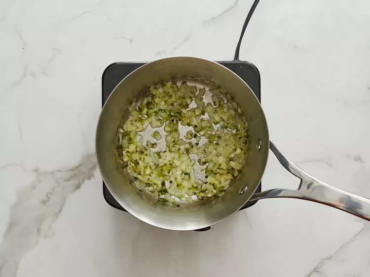
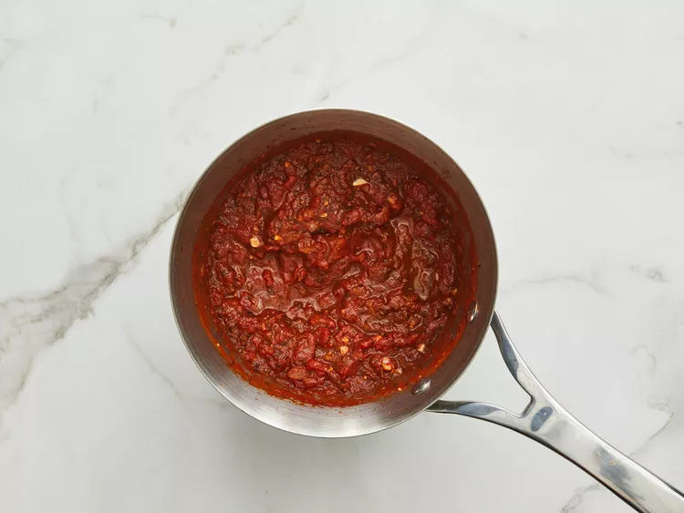
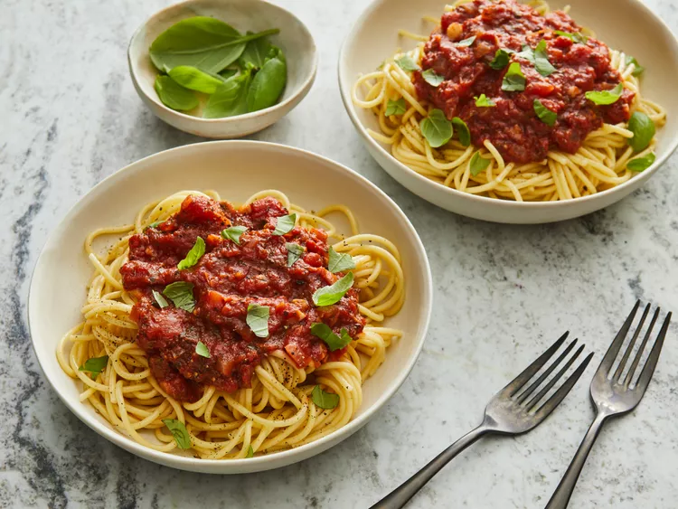

This easy spaghetti sauce is a quick recipe for tomato sauce. I have just given the outline for the sauce, but you can add any vegetables to it. I especially like it with mushrooms and peppers.
Heat oil in a large saucepan over medium heat. Add onion, green onion, and garlic; cook until onions are translucent, 3 to 4 minutes.
Stir in tomatoes, basil, oregano, and sugar. Bring to a boil, reduce heat to low, and simmer for 20 minutes.
Serve over pasta.
